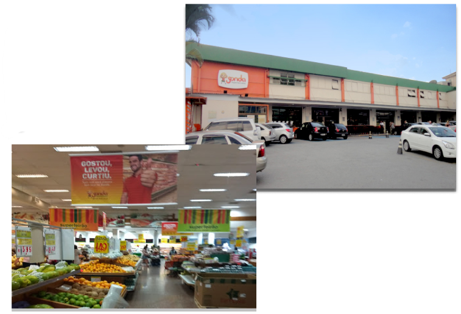

Conheça alguns dos comércios que temos pela região, sua localização e horário de funcionamento!
Supermercado Sonda
Descrição: o Sonda é uma das maiores redes de supermercados do Estado de São Paulo. Atualmente, a rede possui 24 lojas e mais de 5 mil funcionários especializados em atendimento de primeira. Mais de 3 milhões de clientes por mês aprovam a qualidade, a variedade e o preço baixo do Sonda.
Endereço: Av. Itaberaba, 1853 Bairro Freguesia do Ó - Distrito Freguesia do Ó - SP
Contato:
- Fone: (11) 2132-0950
- Site: https://www.sondadelivery.com.br/
Horário de funcionamento:
Segunda à sabado: 7hrs às 22hrs
Domingo e feriados: 7hrs às 22hrs
Delícia da Freguesia
Descrição: É uma padaria da região que está naquele ponto a mais de 70 anos. Conhecida por seus pães crocantes e doces maravilhosos! Tem preços acessíveis e um ótimo atendimento.
Endereço: Av. João Paulo I, 1184 - Freguesia do Ó - SP
Contato:
- Fone: (11) 3923-2008
- Site: http://www.deliciadafreguesia.com.br
Horário de funcionamento:
Segunda à sabado: 7hrs às 22hrs
Domingo e feriados: 9hrs às 20hrs
Lojas Economica
Descrição: É uma das lojas mais populares na cidade de São Paulo, na qual tem preços baratos e produtos de qualidade. A loja se encontra na Itaberaba a mais de 5 anos e só vem crescendo mais e mais.
Endereço: Av. Itaberaba, 2011 - Freguesia do Ó - SP
Contato:
- Fone: (11) 3978-7324
- Site: https://lojaseconomica.com.br/
Horário de funcionamento:
Segunda à sexta: 09hrs às 21hrs
Sábado: 09hrs às 20hrs
Domingos e feriados: 10hrs às 18hrs

Pet Maxi
Descrição: É uma supermercado para cuidados dos pets tendo desde ração até o próprio animalzinho! Lá tem acesso a um veterinário no andar de cima e há um atendimento de alta qualidade tanto na questão de farmácia para os animais quanto na questão de dicas. Atendem todos os animais desde coelhos até peixes.
Endereço: Av. Inajar de Souza, 350 Freguesia do Ó
Contato:
- Fone: (11) 3931-0292
- Site: https://www.petmaxi.com.br/
Horário de funcionamento:
Segunda à sabado: 8:30hrs à 19:30hrs.

Ômega
Descrição: O açougue Ômega é um lugar muito popular na região,trabalha com todos os tipos de carne proporcinonando um atendimento de qualidade.
Endereço: Av. Itaberaba, 2048 - Freguesia do Ó, São Paulo - SP, 02739-00
Contato:
- Fone: (11) 3998-9654
- Site: https://www.instagram.com/omegacarnes/
Horário de funcionamento:
Segunda à Sábado:07hrs às 21hrs
Domingos e feriados: 7hrs às 14hrs
Swift
Descrição: as lojas Swift são uma rede de mercado de carnes, ela traz um atendimento personalizado e produtos feitos na tecnologia de ponta. Proporcionam carnes de todas as origens, complementos, verduras e até a sobremesa.
Endereço: Av. Itaberaba, 1802 - Freguesia do Ó, São Paulo - SP, 02734-000
Contato:
- Fone: (11) 0800 400 2892
- Site: https://www.swift.com.br/
Horário de funcionamento:
Segunda à Sábado: 09hrs às 20hrs
Domingos e feriados: 9hrs às 15hrs
Supermercado Violeta
Descrição: a rede de mercados proporciona ótimas promoções, produtos de qualidade, com variedades e com o projeto do "cliente fidelidade".
Endereço: Av. Itaberaba, 3516 - Itaberaba, São Paulo - SP, 02739-000
Contato:
- Fone:(11) 3851-8986
- Site: https://supermercadovioleta.com.br/
Horário de funcionamento:
Segunda à Sábado: 07hrs às 21:30hrs
Domingos e feriados: 08hrs às 19:30hrs